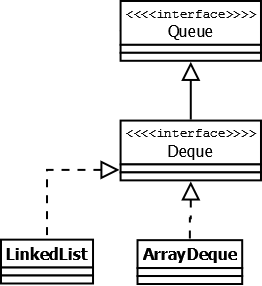

Иерархия коллекций

Интерфейс Map

Hashtable — реализация такой структуры данных, как хэш-таблица. Она не позволяет использовать null в качестве значения или ключа. Эта коллекция была реализована раньше, чем Java Collection Framework, но в последствии была включена в его состав. Как и другие коллекции из Java 1.0, Hashtable является синхронизированной (почти все методы помечены как synchronized). Из-за этой особенности у неё имеются существенные проблемы с производительностью и, начиная с Java 1.2, в большинстве случаев рекомендуется использовать другие реализации интерфейса Map ввиду отсутствия у них синхронизации.
HashMap — коллекция является альтернативой Hashtable. Двумя основными отличиями от Hashtable являются то, что HashMap не синхронизирована и HashMap позволяет использовать null как в качестве ключа, так и значения. Так же как и Hashtable, данная коллекция не является упорядоченной: порядок хранения элементов зависит от хэш-функции. Добавление элемента выполняется за константное время O(1), но время удаления, получения зависит от распределения хэш-функции. В идеале является константным, но может быть и линейным O(n). Более подробную информацию о HashMap можно почитать здесь (актуально для Java < 8).
LinkedHashMap — это упорядоченная реализация хэш-таблицы. Здесь, в отличии от HashMap, порядок итерирования равен порядку добавления элементов. Данная особенность достигается благодаря двунаправленным связям между элементами (аналогично LinkedList). Но это преимущество имеет также и недостаток — увеличение памяти, которое занимет коллекция. Более подробная информация изложена в этой статье.
TreeMap — реализация Map основанная на красно-чёрных деревьях. Как и LinkedHashMap является упорядоченной. По-умолчанию, коллекция сортируется по ключам с использованием принципа "natural ordering", но это поведение может быть настроено под конкретную задачу при помощи объекта Comparator, который указывается в качестве параметра при создании объекта TreeMap.
WeakHashMap — реализация хэш-таблицы, которая организована с использованием weak references. Другими словами, Garbage Collector автоматически удалит элемент из коллекции при следующей сборке мусора, если на ключ этого элеметна нет жёстких ссылок.
Интерфейс List

Реализации этого интерфейса представляют собой упорядоченные коллекции. Кроме того, разработчику предоставляется возможность доступа к элементам коллекции по индексу и по значению (так как реализации позволяют хранить дубликаты, результатом поиска по значению будет первое найденное вхождение).
Vector — реализация динамического массива объектов. Позволяет хранить любые данные, включая null в качестве элемента. Vector появился в JDK версии Java 1.0, но как и Hashtable, эту коллекцию не рекомендуется использовать, если не требуется достижения потокобезопасности. Потому как в Vector, в отличии от других реализаций List, все операции с данными являются синхронизированными. В качестве альтернативы часто применяется аналог — ArrayList.
Stack — данная коллекция является расширением коллекции Vector. Была добавлена в Java 1.0 как реализация стека LIFO (last-in-first-out). Является частично синхронизированной коллекцией (кроме метода добавления push()). После добавления в Java 1.6 интерфейса Deque, рекомендуется использовать именно реализации этого интерфейса, например ArrayDeque.
ArrayList как и Vector является реализацией динамического массива объектов. Позволяет хранить любые данные, включая null в качестве элемента. Как можно догадаться из названия, его реализация основана на обычном массиве. Данную реализацию следует применять, если в процессе работы с коллекцией предплагается частое обращение к элементам по индексу. Из-за особенностей реализации поиндексное обращение к элементам выполняется за константное время O(1). Но данную коллекцию рекомендуется избегать, если требуется частое удаление/добавление элементов в середину коллекции.
LinkedList — ещё одна реализация List. Позволяет хранить любые данные, включая null. Особенностью реализации данной коллекции является то, что в её основе лежит двунаправленный связный список (каждый элемент имеет ссылку на предыдущий и следующий). Благодаря этому, добавление и удаление из середины, доступ по индексу, значению происходит за линейное время O(n), а из начала и конца за константное O(1). Так же, ввиду реализации, данную коллекцию можно использовать как стек или очередь. Для этого в ней реализованы соответствующие методы.
Интерфейс Set

Представляет собой неупорядоченную коллекцию, которая не может содержать дублирующиеся данные. Является программной моделью математического понятия «множество».
HashSet — реализация интерфейса Set, базирующаяся на HashMap. Внутри использует объект HashMap для хранения данных. В качестве ключа используется добавляемый элемент, а в качестве значения — объект-пустышка (new Object()). Из-за особенностей реализации порядок элементов не гарантируется при добавлении.
LinkedHashSet — отличается от HashSet только тем, что в основе лежит LinkedHashMap вместо HashMap. Благодаря этому отличию порядок элементов при обходе коллекции является идентичным порядку добавления элементов.
TreeSet — аналогично другим классам-реализациям интерфейса Set содержит в себе объект NavigableMap, что и обуславливает его поведение. Предоставляет возможность управлять порядком элементов в коллекции при помощи объекта Comparator, либо сохраняет элементы с использованием "natural ordering".
Интерфейс Queue
Этот интерфейс описывает коллекции с предопределённым способом вставки и извлечения элементов, а именно — очереди FIFO (first-in-first-out). Помимо методов, определённых в интерфейсе Collection, определяет дополнительные методы для извлечения и добавления элементов в очередь. Большинство реализаций данного интерфейса находится в пакете java.util.concurrent
PriorityQueue — является единственной прямой реализацией интерфейса Queue (была добавлена, как и интерфейс Queue, в Java 1.5), не считая класса LinkedList, который так же реализует этот интерфейс, но был реализован намного раньше. Особенностью данной очереди является возможность управления порядком элементов. По-умолчанию, элементы сортируются с использованием «natural ordering», но это поведение может быть переопределено при помощи объекта Comparator, который задаётся при создании очереди. Данная коллекция не поддерживает null в качестве элементов.
ArrayDeque — реализация интерфейса Deque, который расширяет интерфейс Queue методами, позволяющими реализовать конструкцию вида LIFO (last-in-first-out). Интерфейс Deque и реализация ArrayDeque были добавлены в Java 1.6. Эта коллекция представляет собой реализацию с использованием массивов, подобно ArrayList, но не позволяет обращаться к элементам по индексу и хранение null. Как заявлено в документации, коллекция работает быстрее чем Stack, если используется как LIFO коллекция, а также быстрее чем LinkedList, если используется как FIFO.
Сложность алгоритмов методов коллекций
Java Collections Framework содержит большое количество различных структур данных, доступных в JDK «из коробки», которые в большинстве случаев покрывают все потребности при реализации логики приложения. Сравнение временных характеристик основных коллекций, которые зачастую используются в разработке приложений приведено в таблице: